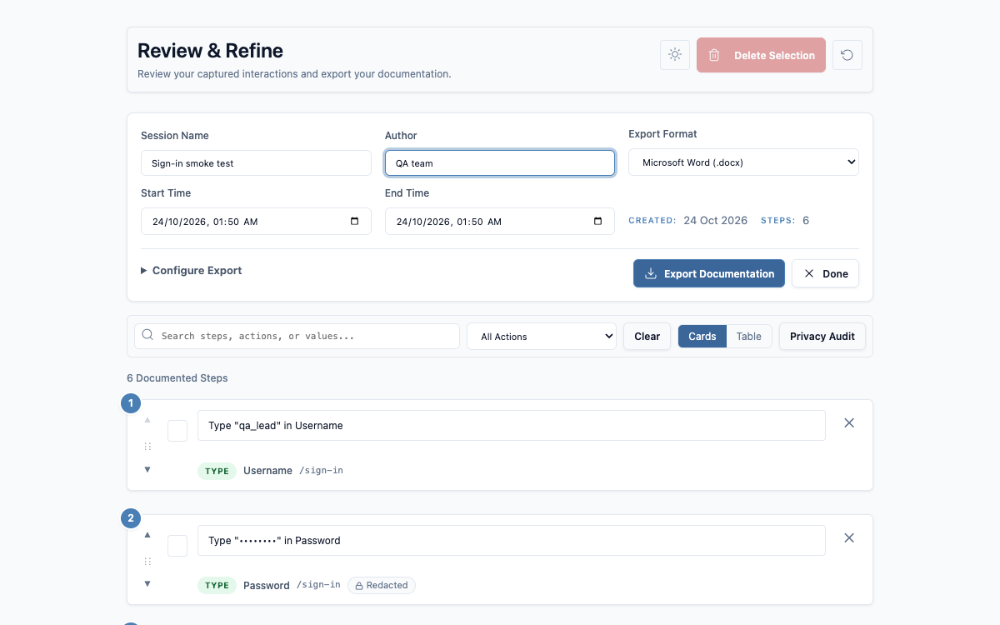
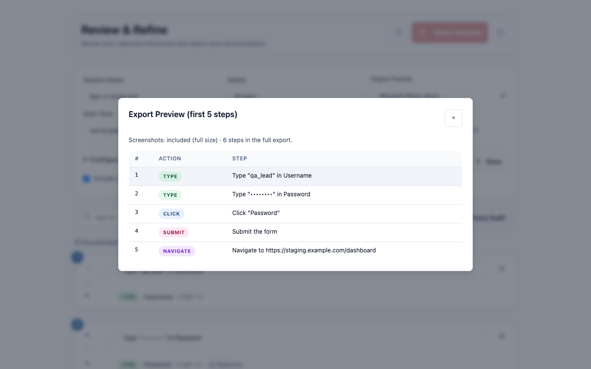

Click through your test once. Get the test case.
TestSnapper records what you do in Chrome as numbered test steps with field names and screenshots. Review them, then export to Word, PDF, CSV, JSON or Markdown.
Open source under MIT. Runs entirely in your browser. Chrome 105 or later.

- 4.7 / 5Chrome Web Store rating
- 0Servers your data touches
- MITOpen source
Your recordings stay on your machine
Test environments are full of real accounts and real data. None of it leaves your browser. Privacy policy
- Stored locallySessions and screenshots live in Chrome on your computer. Nothing is uploaded, no analytics.
- Masked as you recordPasswords, card numbers, SSNs and tokens are hidden before they're saved.
- AuditedEvery session has a privacy audit listing what was masked.
- No remote codeThe Word and PDF libraries ship inside the extension.
Steps someone else can follow
Manual test cases and bug reports take longer to write than to run. TestSnapper writes them while you run them.
-
Records every interaction
Clicks, typing, dropdowns, checkboxes, form submits, key presses and page loads, in every frame. Pause and resume whenever you like.
-
Names fields the way people do
From labels, ARIA, placeholders and nearby text. If none is found, you're asked.
-
Screenshots as evidence
On demand with Ctrl+Shift+S, on every page change, or on a timer.
-
Sensitive values never get stored
Passwords, PINs, card numbers, CVCs, SSNs, dates of birth and tokens are masked the moment they're recorded. Screenshots are skipped while a password or payment field has focus.
-
Review before you share
Rename, reorder, delete or add steps in card or table view, with undo.
-
Optional API call log
Record the XHR and fetch calls a page makes, or only failures. Never bodies.
-
Keyboard first
Use ⌘ instead of Ctrl on a Mac.
ScreenshotCtrl+Shift+SPause or resumeCtrl+Shift+UStopCtrl+Shift+E
How it works
Start recording
Open the page you're testing, click the TestSnapper icon and press Start.
Run your test
Use the site as normal. A small toolbar on the page shows the timer, pause, screenshot and stop.
Review the steps
Stop opens the review page. Tidy names, add manual checks, check the privacy audit.
Export
Pick a format and screenshot size. The file is named after the session.
What you get
These are the real files from the walkthrough's recording. Pick who it's for, or open any format.

- Word .docx
- Session details and numbered steps with screenshots. Sample file
- PDF .pdf
- The same layout on A4, for sign-off. Sample file
- CSV .csv
- Step, action, field name, value and URL. Sample file
- JSON .json
- The full session and every step as structured data, for scripts and test-management imports. Sample file
- Markdown .md
- A plain step list for tickets, pull requests and wikis. Sample file
Install
From the Chrome Web Store
The quickest way. Updates install automatically. Works in Edge and other Chromium browsers too.
- Open TestSnapper in the Chrome Web Store.
- Click Add to Chrome, then Add extension.
- Pin the icon to your toolbar.
From source
Needs Node.js 18 or later.
git clone https://github.com/Nataraaj-Shanmugam/TestSnapper.git
cd TestSnapper
npm install
npm run build- Open
chrome://extensionsand turn on Developer mode. - Click Load unpacked and choose the
distfolder.
Questions
Why does it ask to read and change data on all websites?
To record, TestSnapper has to run on the page you're testing, and that can be any site. It only captures while you're recording, and what it captures stays in your browser.
What is the network permission (webRequest) for?
The optional API call log. When you turn it on in Settings, TestSnapper notes the method, URL and status of requests the recorded tab makes. It never reads request or response bodies. It's off by default.
Where is my data, and how do I delete it?
In Chrome's local extension storage on your computer, and in a folder you choose if you turn on File Sync. Delete single sessions or everything from the popup's Export tab. Removing the extension deletes its storage.
Does it work on local files, iframes and single-page apps?
Yes. It records in every frame of the page, and picks up in-app navigation as well as full page loads. For file:// pages, open the extension's details in chrome://extensions and turn on Allow access to file URLs.
Does it work in Edge or Brave?
Yes. Install it from the Chrome Web Store in any Chromium browser that supports Chrome extensions. Firefox and Safari aren't supported.
Is it free?
Yes, and open source under the MIT License. There's no account, no paid tier and no tracking.
Meet the developer
Nataraaj Shanmugam
SDET, building tools for QA teams
I build QA tooling. TestSnapper started as a way to stop retyping test steps after exploratory sessions. Bug reports, ideas and pull requests are welcome.